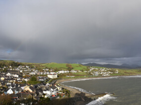
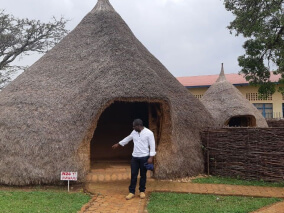
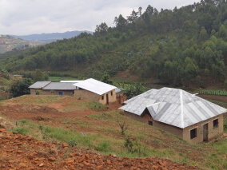

From Homeland to Homeland
An epic journey from Kentucky to Burundi via Wales and Ukraine.

Learn more about your friends' locations.
Each person is a free artist, called to transform the conditions, thoughts, and structures that shape our lives.
The city of TripleTen has brought together professionals from all corners of the world. Today, the TripleTen Art Gallery is proud to present stories and photos of some of the people who dedicate their time and effort to making the future tech professionals of this city feel at home. Each of us has a unique story about where we come from. Feel free to add your own story and a piece of visual art dedicated to your hometown to our collection. No matter where you're from, we're happy you're our neighbor.





Artists
Stefan Warren, editor-in-chief Kseniya Glagoleva, project manager
The medieval ruins of Cricieth Castle overlook the town below a rock jutting out into the sea. It is believed to have been built by Llewelyn the Great in the 13th century. Some 900 years later, the self-proclaimed *Pearl of Wales on the shores of Snowdonia* has become a popular tourist destination during the summer months.
A short walk from the castle road, you can enjoy the world's best ice cream at Cadwalader's, whose secret ingredient, according to rumors, is locally sourced seaweed. Another claim to fame is the fact that Criccieth won the *Wales in Bloom* award for five consecutive years for its spectacular floral displays throughout the town. It was also the home of David Lloyd George, the only Welshman to hold the office of Prime Minister of the United Kingdom.
Artists
Travis Turner, author and editor
Berea is a small town located in central Kentucky. The town is surrounded by beautiful forests and fields. It is known as the state's craft capital, and visitors will find many shopping opportunities: shops with handcrafted jewelry, candles, wood items, galleries, glass workshops, and much more. The town holds an annual festival celebrating "spoon bread," a local dish made with cornbread and served with a wooden spoon.
However, it is probably best known for its local college. Berea College was founded in 1855 and was the first racially integrated college in the South, as well as the first co-educational one. Somewhat uniquely, it does not charge tuition ‐ every student receives a full scholarship.
Artists
Grevisse Kenguruka, technical editor
Muramvya is one of the 18 provinces of Burundi. During the kingdom era, Muramvya was the royal capital, and in 2007, due to its cultural and natural landscape, it was added to the UNESCO Tentative List of World Heritage. It is located in the center of Burundi, between the country's political and economic capitals.
The weather is quite cold at night, but during the day, you'd think you were in heaven. At 2,665 meters (8,743 feet) above sea level, Mount Teza is one of the coldest places in the province. But this cool breeze allows for one of the largest tea and coffee plantations in the country, which account for the majority of Burundi's exports.
Kibira National Park, one of the largest wildlife reserves for monkeys, spans four provinces, including Muramvya. This National Park lies at the peak of the beautiful Congo-Nile Divide mountains, ranging between 1,550 and 2,660 meters in altitude. It is filled with beautiful vegetation and is a source for the various rivers and streams that supply water throughout the country.
Artists
Higor Moriyama Souza
The city is a commercial hub and distribution point for agricultural production from the entire far south of São Paulo state, in addition to being the largest city in this region. In the national urban hierarchy, it was classified by the IBGE (Brazilian Institute of Geography and Statistics) as a sub-regional center of level B (these are cities that have influence over nearby municipalities).
In the 18th century, the Portuguese crown ordered the establishment of numerous villages in the colony of Brazil so that all the territory that Portugal considered its own would be properly occupied and colonized, as Spain claimed territories established in the Treaty of Tordesillas. In this context, the village of Faxina was created, separated from the then village of Sorocaba, on September 20, 1769. Antonio Furquim Pedroso, sent by the district of São Paulo, was present at the creation of the new village, where the Vila Velha neighborhood, now the municipality of Taquarivaí, is located today.